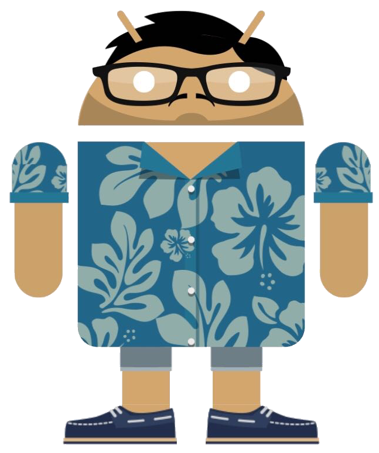

Heyo! I’m Mudit and I love robots and coding
and AI and pretty much anything fun :)
I’ll be majoring in CS at GT next year!
Meet The Creators

So, What's The Point?
Drawing with a mouse is hard.
Drawing with only written directions is hard, too.
Now, imagine recreating someone's drawing, with a mouse, no eraser, and a third person's description.
This usually leads to an end result that looks nothing like the original work, but don't worry, becuase that's
the point of TeleDrawings. Every addition to a thread leads farther and farther away from the original, but gives
us more fun along the way.
You don't have to be able to draw in order to play, becuase the draiwngs that lead to funnier threads
arent't necessarily the ones with better technique. What's even better is that you don't even have to know what you're
drawing, becuase describing it is someone else's job. There are no right answers and no points, so it's not a competition.
Just have fun and don't be worried of getting something 'wrong'.
We hope you enjoy
-Mudit and Erica
Rules
- A Thread is a collection of alternating drawings and captions.
- Threads start with a drawing
- No user may create a drawing to their own caption or vice versa.
- A user may create more than one post (a drawing or caption) in each thread.
- If you want to see all the history of a Thread, you have to bail out.
- Once you bail there's no way to rejoin.
Here's Some Examples
Insert Scanned Image Here